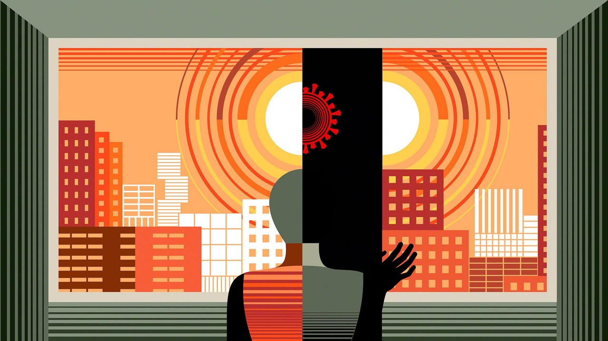
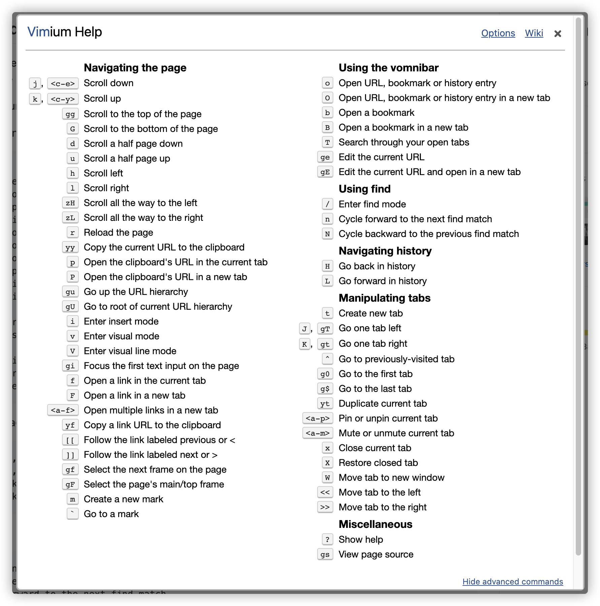
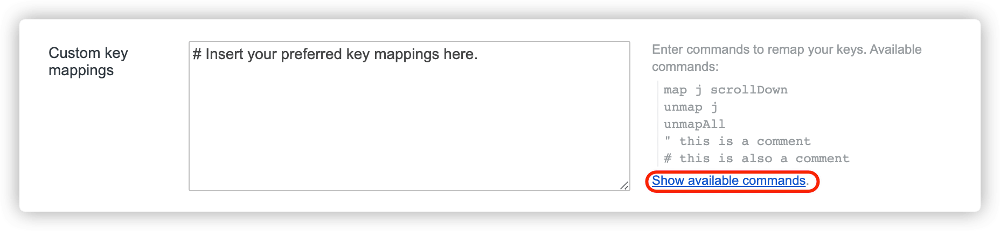
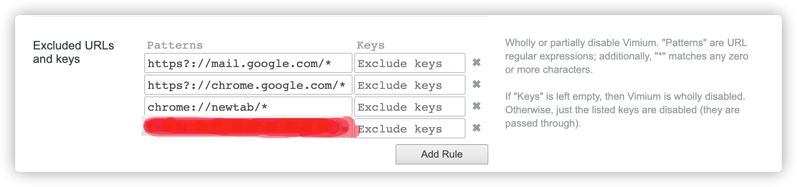
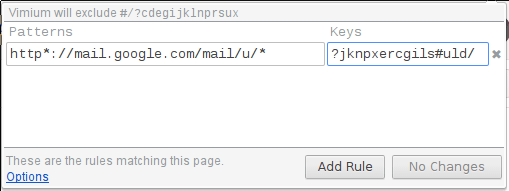
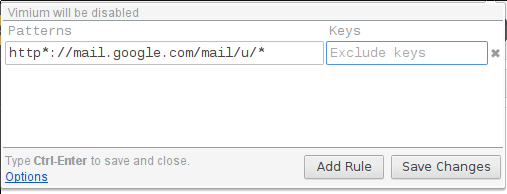
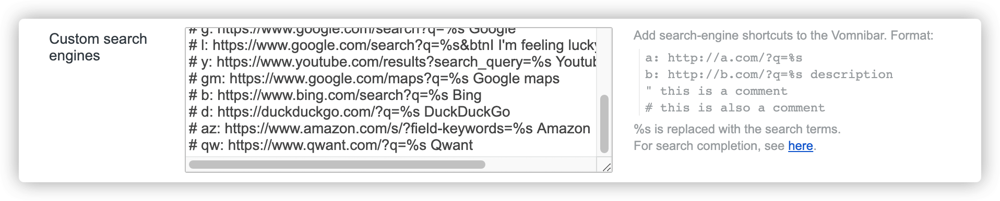
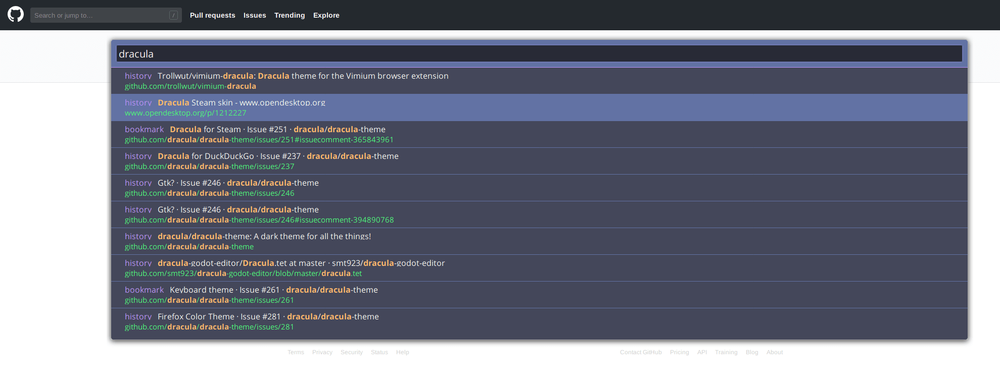

Vimium - The Hacker’s Browser
Vimium is a browser extension that provides keyboard-based navigation and control of the web in the spirit of the Vim editor.
Installation instructions:

1. 键盘绑定默认值
在安装了
Vimium插件之后，可以通过键入?符号，查看键盘绑定列表。
Vimium supports command repetition so, for example, hitting 5t will open 5 tabs in rapid succession. <Esc> (or <c-[>) will clear any partial commands in the queue and will also exit insert and find modes.

- [1] Navigating the current page
| 编号 | 快捷键 | 对应解释说明 |
|---|---|---|
| 1 | ? |
show the help dialog for a list of all available keys |
| 2 | h |
scroll left |
| 3 | j |
scroll down |
| 4 | k |
scroll up |
| 5 | l |
scroll right |
| 6 | gg |
scroll to top of the page |
| 7 | G |
scroll to bottom of the page |
| 8 | d |
scroll down half a page |
| 9 | u |
scroll up half a page |
| 10 | f |
open a link in the current tab |
| 11 | F |
open a link in a new tab |
| 12 | r |
reload |
| 13 | gs |
view source |
| 14 | i |
enter insert mode |
| 15 | yy |
copy the current url to the clipboard |
| 16 | yf |
copy a link url to the clipboard |
| 17 | gf |
cycle forward to the next frame |
| 18 | gF |
focus the main/top frame |
- [2] Navigating to new pages
| 编号 | 快捷键 | 对应解释说明 |
|---|---|---|
| 1 | o |
Open URL, bookmark, or history entry |
| 2 | O |
Open URL, bookmark, history entry in a new tab |
| 3 | b |
Open bookmark |
| 4 | B |
Open bookmark in a new tab |
- [3] Using find
| 编号 | 快捷键 | 对应解释说明 |
|---|---|---|
| 1 | / |
enter find mode |
| 2 | n |
cycle forward to the next find match |
| 3 | N |
cycle backward to the previous find match |
- [4] Navigating your history
| 编号 | 快捷键 | 对应解释说明 |
|---|---|---|
| 1 | H |
go back in history |
| 2 | L |
go forward in history |
- [5] Manipulating tabs
| 编号 | 快捷键 | 对应解释说明 |
|---|---|---|
J, gT |
go one tab left | |
K, gt |
go one tab right | |
g0 |
go to the first tab | |
g$ |
go to the last tab | |
^ |
visit the previously-visited tab | |
t |
create tab | |
yt |
duplicate current tab | |
x |
close current tab | |
X |
restore closed tab (i.e. unwind the ‘x’ command) | |
T |
search through your open tabs | |
W |
move current tab to new window | |
<a-p> |
pin/unpin current tab |
- [6] Additional advanced browsing commands
| 编号 | 快捷键 | 对应解释说明 |
|---|---|---|
| 1 | ]], [[ |
Follow the link labeled ‘next’ |
| 2 | gi |
focus the first text input box on the page |
| 3 | gu |
go up one level in the URL hierarchy |
| 4 | gU |
go up to root of the URL hierarchy |
| 5 | ge |
edit the current URL |
| 6 | gE |
edit the current URL and open in a new tab |
| 7 | zH |
scroll all the way left |
| 8 | zL |
scroll all the way right |
| 9 | v |
enter visual mode; use p/P to paste, y to yank |
| 10 | V |
enter visual line mode |
| 11 | <a-f> |
open multiple links in a new tab |
2. 自定义键盘映射
可以在选项页面的“自定义键映射”中重新映射或取消映射任何默认的键绑定。
你可以在选项页面的“自定义键映射”中，重新映射或取消映射任何默认的键绑定，且按照每行输入以下按键映射命令的其中之一，即可。
map key command- 将键映射到
Vimium中，覆盖Chrome浏览器的默认行为。
- 将键映射到
unmap key- 取消一个键的映射，并恢复
Chrome浏览器的默认行为。
- 取消一个键的映射，并恢复
unmapAll- 取消所有绑定的映射，完全清除
Vimium的默认设置。
- 取消所有绑定的映射，完全清除

可用的 Vimium 命令，可以通过选项页面上的键映射框附近的 “Show Available commands” 链接找到，命令名出现在括号中描述的右侧。同时，我们也可以通过以 " 或 # 开头的行向键映射添加注释。自定义键盘映射的详情，我们可以参考 Custom Key Mappings 来学习需要注意的事项和使用方式。
# map key command
map <c-d> scrollPageDown
map r reload
# unmap key
unmap r
unmap <c-d>
# unmapAll
unmapAll3. 禁用其适用范围
即在浏览某些完整的时候，禁止某些或者全部的键映射。
虽然 Vimium 的键绑定很棒，但是在某些站点上它们很可能会妨碍网站正常的功能使用。例如，浏览 Kubernetes 的 Dashboard 的时候，无法正常的在终端中使用 vim 来编辑文件。

- Partially Disable Vimium on a Site


- Wholly Disable Vimium on a Site

4. 网页搜索器配置
当然 Vimium 也可以玩出花活，可以通过搜索器直接搜索你需要的东西。
Your search engines and their shortcuts can be edited on Vimium’s options page.

# This is a comment.
keyword: https://www.google.ie/search?q=%s
# Custom search engines can have descriptions.
g: https://www.google.ie/search?q=%s Google search
b: https://www.bing.com/search?setmkt=en-GB&q=%s Bing
gh: https://github.com/search?q=%s GitHub
yt: https://www.youtube.com/results?search_query=%s YouTube
imdb: https://www.imdb.com/find?s=all&q=%s IMDB5. 主题色模式修改
修改和配置，插件的默认主题。
默认主题的颜色是白色，如果当晚上的时候，可能会有点辣眼睛。所以，官方 Wiki 中提及了关于主题模板的设置和选择，可供我们使用。
